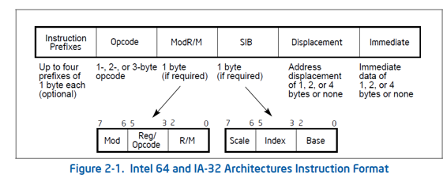

在 《x86/x64 指令编码内幕之指令格式》 一文，见 http://www.mouseos.com/x64/format.html 中说过：指令长度为 15 bytes
那么事实上是这样吗？谁来保证指令的长度就是 15 bytes？ 怎样来保证？
现在，我们来探索这个问题。
没错， AMD manual Vol3 第 1.1 Instruction Byte Brder 节中明确地说：An instruction can be between one and 15 bytes in length.
而 Intel manual 上没有明说指令长度是多少，而下图的描述有些让人迷惑：

这样的描述，让人直觉认为 在饱和状态下 最多可以是 17 bytes, 事实上有可能会达到这样的饱和状态吗？ 要达到这样的饱和状态，必须每个部分都要饱和
事实上这是不可能 每个部分同时达到饱和状态 的。
事实上最长的指令长度会出现在：prefix 达到饱和, ModRM/SIB 达到饱和, displacement 达到饱和，immediate 达到饱和。而这些饱和不可能与 opcode 同时发生饱和。
只有 指令 memory,immediate 这种寻址模式下才有这些饱和状态出现，即：目标操作数是 memory，源操作数是 immediate
|
事实上： |
即：指令 memory, immediate 这种寻址模式不会出现在 2 bytes 或 3 bytes 的 opcode 指令中
|
lock add dword ptr es:[eax+ecx*8+0x11223344], 0x12345678 |
仅仅在 16 位模式下，这条汇编语句的 encode 是 15 bytes
因为：它在 16 位模式下，需要进行 operand size override 和 address size override，因此能达到 prefix 的饱和
从而每个部分除了 opcode 外，都达到了饱和状态。刚刚好是 15 bytes：26 66 67 F0 81 84 C8 44 33 22 11 78 56 34 12
4 group 的 prefix 都使用上了，ModRM 和 SIB 都需要，displacement 和 immediate 都是 4 bytes 的，只有 opocde 是 1 byte
这条指令在 32 位是：26 F0 81 84 C8 44 33 22 11 78 56 34 12 （13 bytes）
在 64 位下：26 67 F0 81 84 C8 44 33 22 11 78 56 34 12 （14 bytes）
那是因为 32 位下缺省的 operands size 和 address size 是 32 位，不需要作 operand size override 和 address size override
在 64 位下缺省的 operands size 是 32 位，而 address size 是 64 位，因此不需要作 operand size override，但是需要做 address size override